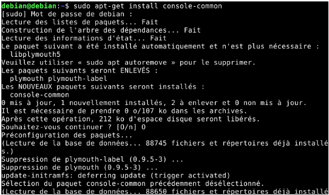
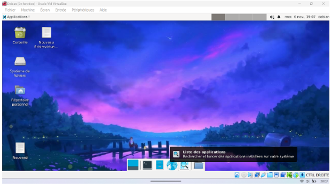

Cette compétence consiste a savoir .
Contexte :
Technologies utilisées : JAVA
Fonctionnalités principales :
Apprentissages : J'ai appris a crée un serveur en Java qui permet de recevoir pluieur client. J’ai ausi appris a envoyer des messages entre le client et le serveur. J'ai aussi appris a créer un client qui se connecte au serveur et qui peut envoyer des messages.
Contexte : Nous avons du créer une machine virtuelle et la configurer de zéro afin d'avoir un ordinateur qui tourne sur Linux sur notre PC.
Language utilisées :shell
Apprentissages : J'ai appris a créer et a installer une machine virtuelle puis ensuite a configuer cette deniere avec un systheme d explotiatioon debian linux. Jusqua arriver a une machie vituelle avec une interface


J’ai acquis des compétences pour utiliser les fonctionnalités de base d’un système multitâches et multiutilisateurs.
Je suis capable d’identifier les différents composants matériels et logiciels d’un système numérique.
J’ai appris à installer et configurer un système d'exploitation ainsi que des outils de développement.
Je sais installer des services réseau de base et configurer un poste de travail dans un réseau d’entreprise à l’aide de Docker.
J’ai acquis des connaissances de base sur l’architecture des systèmes et des réseaux.
Je suis capable de mettre en place des mesures correctives adaptées à la nature des incidents identifiés grâce à la programmation shell.
Je sais identifier mes points forts et mes axes d’amélioration pour progresser dans mes apprentissages et mes réalisations.